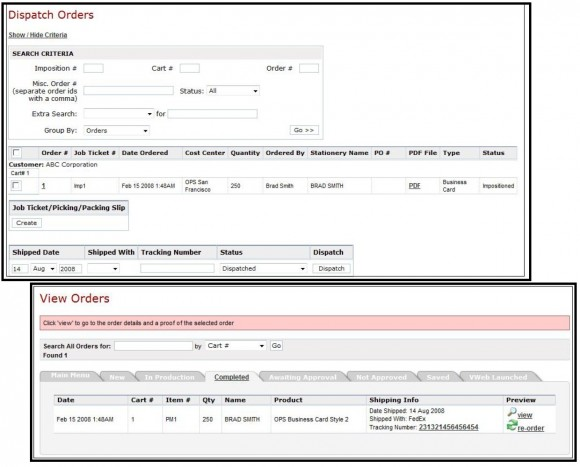
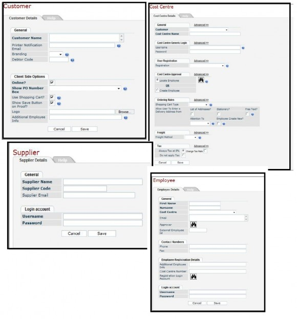
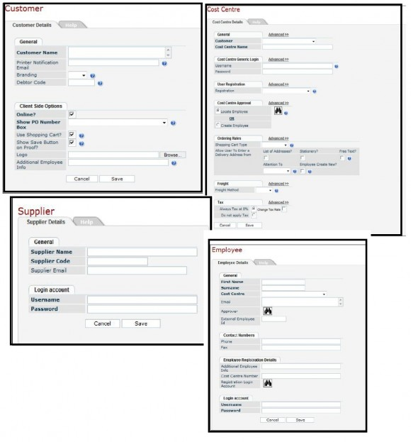
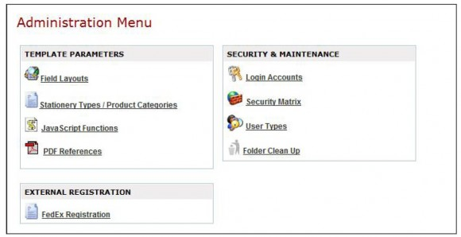
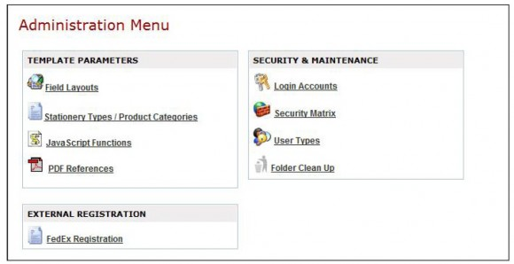

Online Print Solutions
http://onlineprintsolutions.com/
Online Print Solutions started in the industry 9 years ago. At present, they have a mature web to print product suite that can handle corporate print management, dynamic design, marketing, variable data printing and retail. Separate web to print modules deal with each of these areas.
Online Print Solutions Modules
Retail Solutions
The OPS Retail Solutions module offers template-based interactive personalization, online proofing, pre-flight, and online print job submission at a business to customer level. From the main page of the OPS Retail Site, users can view the product catalog , upload a print job, manage orders, and access the web dashboard. Users can also navigate to the Approval Page, VWeb Module, Reports, and the Administration Menu. The shopping cart is prominently displayed on the page. If there are any products ready for check-out, computation of the quantity and amount of order is shown.

The Products Menu and the View Products Catalog link on the main page of the OPS Retail Site lead to the same product catalog. There are 7 main product categories on the catalog:
- Corporate Stationery
- Customizable Marketing Material
- Email Templates
- On-Demand Sales Collateral
- V-Print and Image Builder Combo
- Variable Data Marketing
- Website Templates
- The corporate stationery category includes 2 products, business cards and letterheads. As is, there are 2 business card templates, and 1 letterhead template available in the system. Users can create more templates following the built-in template creation rules of the OPS system.


Sales Collateral
- Through the OPS Retail Site, On-demand Sales Collateral can be ordered online whenever needed by field marketing staff. Ordering is done simply by choosing the item and indicating the desired quantity to be ordered. PDF previews are available for download as well.

Web-to-print collaboration
- The GroupCanvas module through the LiveSession feature allows users to collaborate on dynamically designing a print job. Users can be invited to join a design session where they can all view the same screen and input changes online. On the OPS Retail Solutions, campaign materials can be customized through the GroupCanvas module. Templates for a 2-page corporate brochure and a 1-page real estate flyer are available on the OPS Retail Site.


Variable data printing
- Variable Data Printing is possible through the VPrint and Image Builder Combo feature of OPS. This feature allows personalization of marketing materials to make them more customer directed while corporate branding is still maintained and managed. The VPrint module also allows delivery of personalized communications. It can be integrated with data vendors such as AccuData and USAData. On the OPS Retail Site, a 1-page car I\insurance Letter, a water company dealer postcard, and a Tuffy postcard, all of which can all be customized online, are available as sample templates.


HTML Templates
- OPS Retail Solutions has HTML email templates that can be used when email campaign strategies are implemented. The OPS email templates are guaranteed to work with most email programs such as Outlook 2007, Lotus Notes and Gmail. The OPS Retail Site mentions that 4 email templates are available, but on the date of this post, only one sample template seems to be working.

Smart web-to-print campaigns
- VWeb works hand in hand with the OPS SmartCampaigns system in utilizing variable data printing technology for direct and targeted marketing that can either be through email, print, or SMS. VWeb website templates are featured on the OPS Retail Site product catalog. These pre-designed website templates work well for users who want to launch a website right away. Those who want a more customized site may change features on the template. Variable video may be embedded on the website. There are 2 sample templates on the OPS Retail Site, an Extra Car PURL sample, and a bank PURL template.

VWeb campaigns are managed through the VWeb dashboard. Through the dashboard, users can create, view, deactivate and keep track of launched campaigns.
For automatic print job submission OPS Retail Solutions has the NexJob module. This module is an add-on module to OrderDesk. It works as well as an instant pricing and estimation tool. After specifications for an order has been placed, the system allows users to send a price quotation request estimates with a link to either accept or reject the quoted price is sent back through email. Aside from the submission tool, OPS Retail Solutions also has an approval system structure where authorized administrators can view details or orders, and post approval comments.
- NexJob


Administration
The OPS Retail Site has an Administration Menu where the following can be done:
- View order details and status

- Create and view product list.

- View User List/ Activate Users

- Create/register, update and user account details

- View and update address list


- Create Templates
- Generate reports


Web to Print
OrderDesk is the OPS web to print system that enables centralization of ordering and fulfillment of print service needs within an organization. Online order approval at different levels, stock status viewing, and reports generation are some of the features of this module. OrderDesk can be customized and branded. Navigation through the OrderDesk system is through 3 main menus namely, the Art Room, Office Area, and Administration Area.
1. Art Room Menu – Tasks involved in the Art Department such as creating web-to-print templates and products, imposition and dispatching of orders, and defining signature lay-out are in this menu. The PDF Image Library where images to be used on templates are uploaded, also belong in the Art Room Menu. 
- Creating/ Locating Web-to-Print Templates
- Creating/ Locating Web-to-Print Products
- Cost Matrix
- Color Management
- Page Management

- PDF Library

- Web-to-Print Template Proofing – There are three files that will be generated when proofing: sample PDF of a user side proof, sample PDF that will be used in production of imposition file, and a JPEG of the sample PDF user proof.
- Inventory Management – OrderDesk has an inventory management system that handles assignment of stock level and automatic adjustment of stock levels when orders are placed or cancelled.

- Job Ticketing can be created as part of the imposition process of through Cart transactions to help the prepress team. Aside from Job tickets, OrderDesk can also generate Pick Slips and Pack Slips.
- Web-to-Print Order Management – OrderDesk also has a dispatching order system and Order Tracking system. This allows the administrators are able to immediately dispatch a job order for processing. Users on the other hand will be able to get notified via email of the order details.
 2. Office Area – Tasks on the menu are those performed by the Customer Service Department. Mainly through this area, customers, cost centers, employees, and suppliers accounts, orders, and reports can be created and viewed.  

- Freight/Shipping Management – OrderDesk also has freight options available for users. Sales, freight, and handling taxes may be included in the calculation on Checkout.
- Reports – Reports can be created, customized through SQL queries, and exported as Excel, Word or HTML .
- Storefront Branding / Portal Branding– The OPS Print Portal can be branded by customizing the header, sidebar, footer, as well as adding company logo and other images.

 3. Administration Area – Other administration tasks and attributes like Product Categories, PDF References, System Security and Maintenance , and external FedEx Registration belong to this menu. 
3. Administration Area – Other administration tasks and attributes like Product Categories, PDF References, System Security and Maintenance , and external FedEx Registration belong to this menu. 
- Stationary Types/ Product Categories – Users and administrators will be able to view the Product Categories page, but on the administrator side, along with viewing, editing, and deleting of items is possible.

- Java Script – OrderDesk allows Java Script to be used to create additional functionality/features.

- PDF References – Apart from the default OrderDesk PDF References, it is also possible to create new ones.

- Security and Maintenance – Permission rights can be set using the Security Matrix.
- FedEx and UPS – OrderDesk is able to link to the FedEx and UPS systems and obtain live rates for shipping.

{kind=link}
{kind=link}
{kind=link}
{kind=link}
{kind=link}
{kind=link}
{kind=link}
{kind=link}
{kind=link}
{kind=link}
{kind=link}
{kind=link}
{kind=link}
{kind=link}
{kind=link}
{kind=link}
{kind=link}
{kind=link}
{kind=link}
{kind=link}
{kind=link}
{kind=link}
{kind=link}
{kind=link}
- Payment Methods – OrderDesk can be integrated with Cybersource and Paypal.
{kind=link}
| Storefronts | |
| Consumer storefront | Yes |
|---|---|
| Corporate storefront | Yes |
| Features | |
| Interactive personalization | Template-based |
| E-commerce features | Shopping Cart; Integration with PayPal and CyberSource is available for payment methods; Integration with FedEx and UPS is also available as freight options. |
| CMS features | |
| CRM features | |
| MIS features | Orderdesk allows centralized ordering and fulfillment of print needs |
| Personalization features | Text and text attributes editing including font, color, and size; image uploading, cropping, and effects editing |
| System | |
| Platform | |
| Plugins required | |
| SaaS | Yes |
| Standalone | |
| Volume limits | |
| Storefront branding | Yes; Print Portal can be |
| VDP engine | VPrint |
| Approval workflow | OrderDesk has multi level order approval framework |
| Reporting | OrderDesk has a customizable reporting engine; reports can be in MS Word, MS Excel, PDF or HTML format. |
| Data import-export | VPrint can be integrated with the data systems of AccuData and USAData;Files can be output into optimized PDF and industry standard PPML |
| Job ticketing | Job tickets, pick slips, and pack slips can be generated through OrderDesk. |
| File uploading | through FTP |
| Owned by | DataCreation Pty Ltd |
| Contract type | |
| Value added services | Live session module allows remote collaborative dynamic editing in real time |
| Sign up & installation | |
| Settings | |
| Quoting & estimating | Online job submission, instant quotation and request for estimate is available through the NexJob module |
| Imposition | |
| Languages | |
| Sales information | |
| Pricing | |
| Integration | |
| API | |
| Integration | Can be integrated with Quickbooks, MYOB, Enterprise MIS, EFI Logic, EFI Pace, Prism MIS |
| Support | |
| Demos | Available per request; registration required |
| Free trial | |
| Support | |
| Documentation | |
| Training | |
| Contact | Email, telephone, contact form |
| Notice | |
| Privacy statement | |
| Copyright statement | |